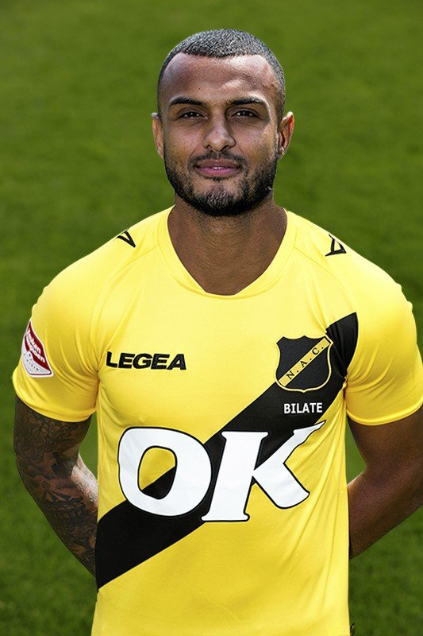

Most valuable players of the season 20/21
Mario Bilate has scored 8 goals so far and has his best season out of his career.
Mario Bilate scores a lot of important goals and is a strong striker.
Mounir El Allouchi has already given 12 assists. This is a record for him.
With 12 assists he is currently the player in the Keuken Kampioendivisie with the most assists.
Nick Olij is the goalkeeper of NAC. He makes a lot of saves and is popular by the fans.
Nick Olij has currently the highest average grade of all the NAC players.